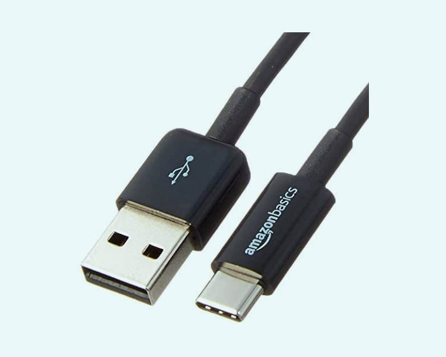

Basics USB 2.0 Printer Cable - A-Male to B-Male Cord - 6 Feet
(1.8 Meters), Black
Price: $6.29
- IN THE BOX: (1) 6-foot-long (1.8 meters) high-speed multi-shielded USB 2.0 A-Male to B-Male cable
- EASY CONNECTION: Connects mice, keyboards, and speed-critical devices, such as external hard drives, printers, and cameras to your computer
- GOLD-PLATED CONNECTORS: Constructed with corrosion-resistant, gold-plated connectors for optimal signal clarity and shielding to minimize interference
- ULTRA FAST SPEED: Full 2.0 USB capability/480 Mbps transfer speed
- FRUSTRATION-FREE PACKAGING: Ships in Certified Frustration-Free Packaging for easy access to batteries
- Products with electrical plugs are designed for use in the US. Outlets and voltage differ internationally and this product may require an adapter or converter for use in your destination. Please check compatibility before purchasing.
- EASY TO USE: Typically, the Male A connector plugs into your computer and the Female A connects to the cable you need extended.
Add to Cart
Add to List